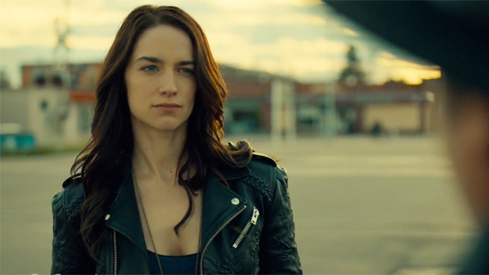
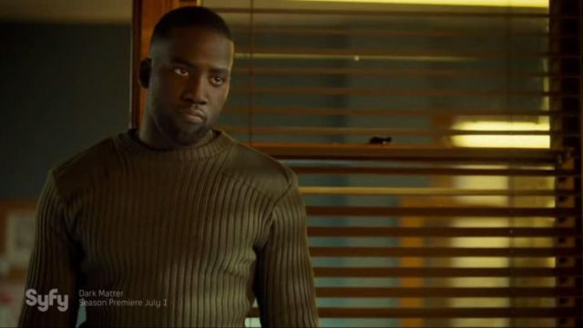
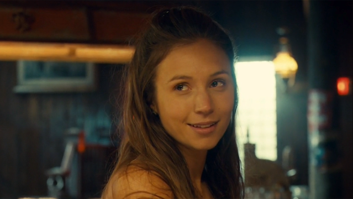
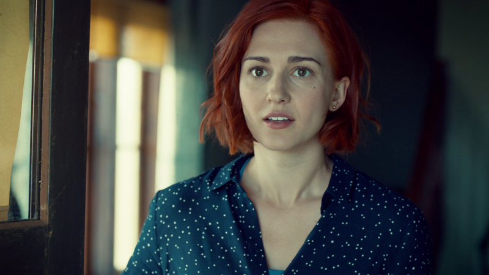

Personagens principais
Wynonna Earp
Wynonna Earp, a bisneta do lendário Wyatt Earp, que ganha o poder de matar revenantes com a arma "Peacemaker".
Dolls
Dolls, um agente especial da Black Badge divistion dos Estados Unidos. Um mutante gerado pela Black Badge.
Doc Holliday
Doc, o parceiro antigo de Wyatt Earp, amaldiçoado pela Bruxa de Pedra que curou sua tuberculose por meio da vida eterna.
Waverly Earp
Waverly, irmã mais nova de Wynonna e especialista em história Earp e estudou culturas e línguas antigas.
Nicole Haught
Nicole, vice-xerife de Purgatório e sucessora de Nedley, que se torna namorada de Waverly e colabora com Black Badge.